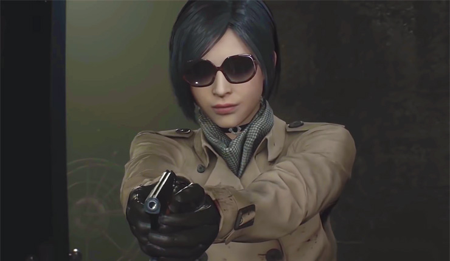

NEWS ABOUT RESIDENT EVIL

Bocoran Resident Evil 8: Village, Bakal Kayak Apa?
Sukses dengan seri-seri Resident Evil sebelumnya, CapCom kembali akan meluncurkan game Resident Evil 8: Village.
7 Perbedaan Resident Evil 2 Remake dengan Aslinya
Beragam pengumuman game terbaru, tak ketinggalan Resident Evil 2 Remake

The Best Heroins in RE Games
Sejumlah karakter cewek yang paling ikonik dan paling dikenang.

Facts about Krauser:Leon's friend
Jack Krauser adalah antagonis sekunder Resident Evil 4 dan salah satu protagonis utama Resident Evil: The Darkside Chronicles.